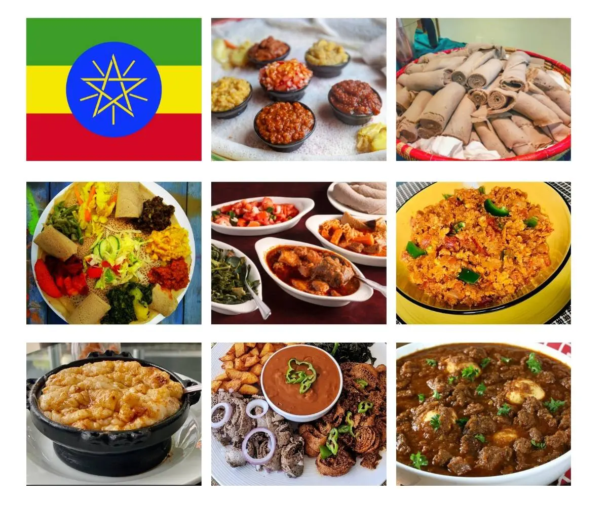

Ayib be Gomen
This food is very common in the southern part of Ethiopia.
Fig. Ayib be Gomen food.
Here are some ingredients that can be served at the same time. which means they are very compatible to Eat.
- Ayib
- Gomen
- Datta
- kitfo
- Injera
- Kocho
Here are some collections of Ethiopian Foods.

Fig. Just to remind you the variety of foods in the country.